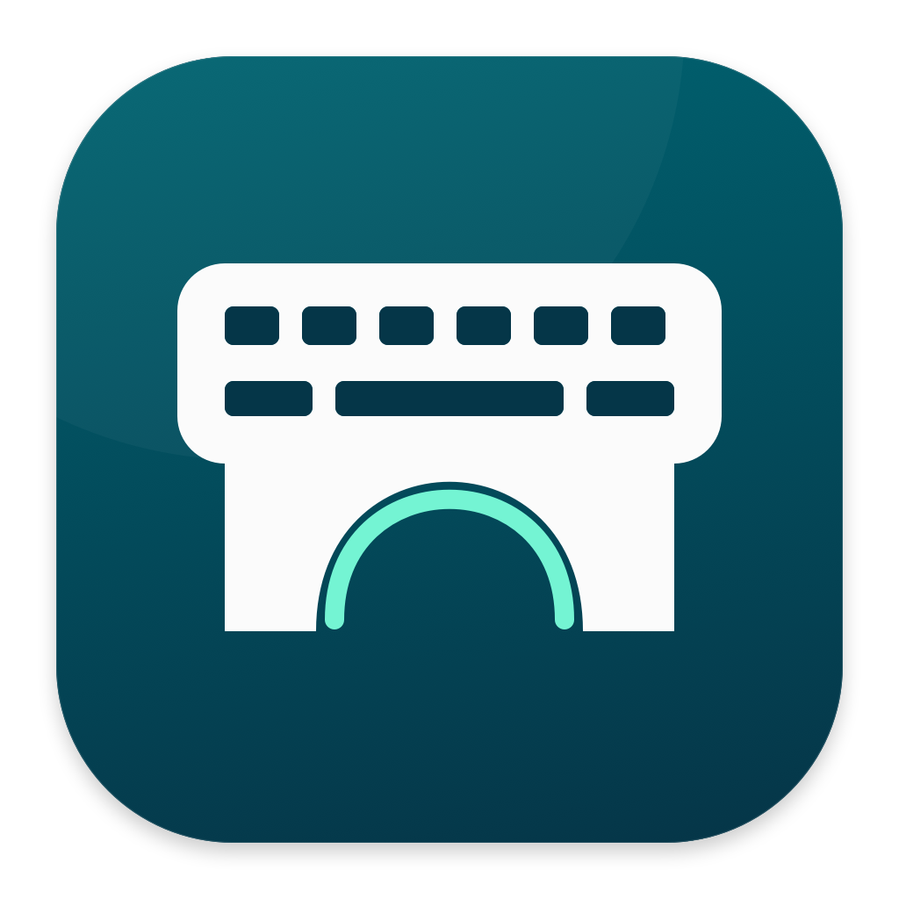

Your familiar keyboard.
Keep typing on your MacBook. Share its built-in trackpad for movement, clicks, dragging and two-finger scrolling.

KeyBridgeShare your MacBook keyboard and trackpad.
Keep your mouse independent.
MacBook Pro
MacBook Pro → Mac mini
Mac mini
Interactive preview · no devices are connected here
Choose the keyboard you want to use. Choose the Mac it controls.
Everything stays a click away in your menu bar.
Keep typing on your MacBook. Share its built-in trackpad for movement, clicks, dragging and two-finger scrolling.
Your external mouse keeps working locally. Use it to choose a destination, reconnect, or return input to this Mac.
The same app sends and receives input. No main window, no screen streaming, and no Wi-Fi fallback.
Bluetooth typing, pointer control and two-finger scrolling have been tried on M1 Pro and Mac mini M4. Hardware testing is still in progress.
Use Bluetooth for everyday convenience. When available, a direct Thunderbolt cable can provide an alternative connection.
Install the app on each Mac and grant the required permissions.
Then pair and choose which Mac will control the other.
Download KeyBridge and move it to Applications on both Macs. The current beta is for Apple Silicon Macs running macOS 14 or later.
On the source Mac, grant Input Monitoring and Accessibility. On the destination Mac, grant Accessibility. Both Macs need Bluetooth access when using Bluetooth.
Compare the pairing code on both Macs and approve it on each. Select your source under Device and your destination under Apply to. Use your mouse to switch back at any time.
Beta · locally signed · not notarized. See the installation notes below.
Read the full setup guide ↗No. USB-C describes the connector. This app’s wired mode needs a cable that supports Thunderbolt networking and an enabled Thunderbolt Bridge on both Macs. A charging cable or an ordinary USB data cable does not guarantee a connection. Wired hardware testing is pending.
Movement, clicks, dragging and two-finger scrolling have been tried over Bluetooth. Native pinch, rotation and multi-finger forwarding are experimental and off by default. The aim is to let the destination system interpret the original gesture, without mapping it to a fixed shortcut. Compatibility still needs physical testing.
The app offers Bluetooth and direct Thunderbolt networking. It does not fall back to Wi-Fi or silently switch between connection modes.
Yes. External mouse input stays local. Open the menu bar app with your mouse and select this Mac as the destination, stop sharing, or reconnect. The app also returns input locally when its connection lease expires.
This early beta uses a local development signature. It is not signed with a Developer ID or notarized by Apple, so macOS may block its first launch. If you trust this download, follow the release’s instructions and use System Settings → Privacy & Security → Open Anyway when available. Do not disable Gatekeeper globally.
Keyboard and trackpad input travels between paired Macs through an encrypted session. Screen video is not streamed. Pairing compares a code on both devices. This beta has not had an independent security audit; diagnostics can include device names and local network information.